The first step for this week was to iterate further on light refraction patterns, with the goal of settling on an 'optimal' pattern for the final product. Below are some of the iterations produced this week:
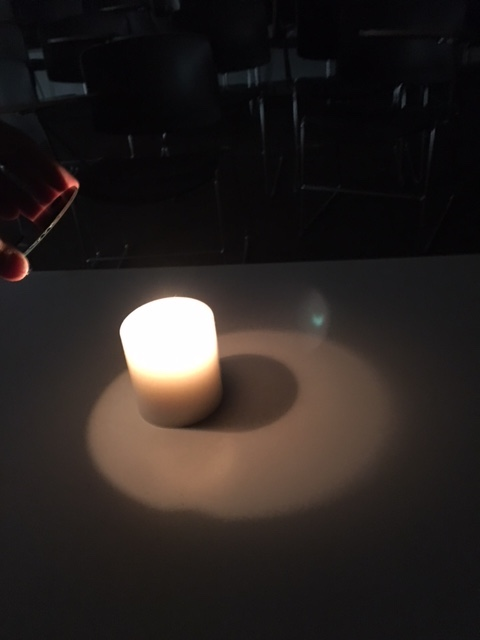 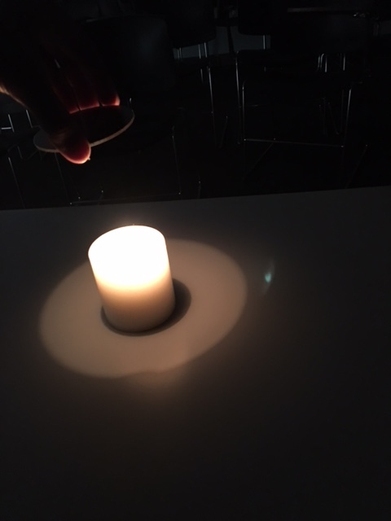 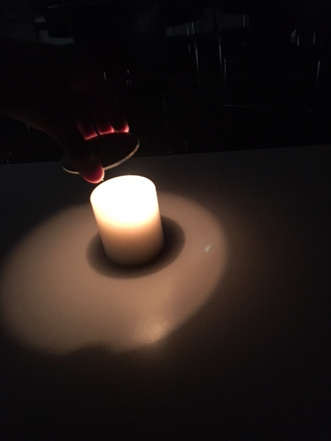 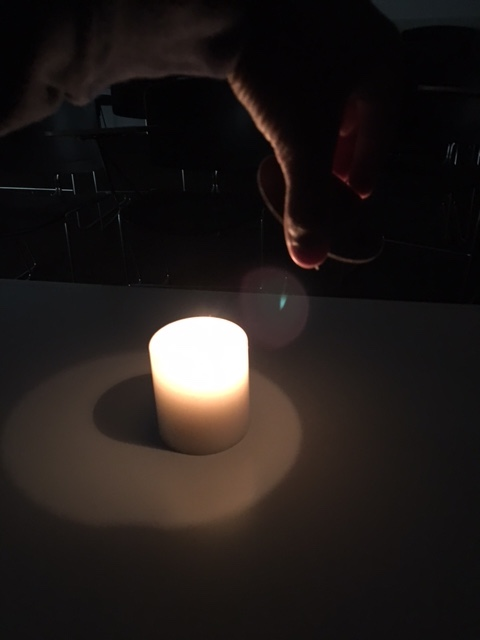 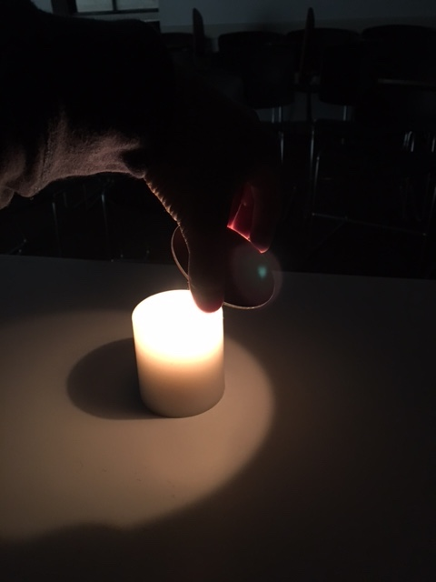 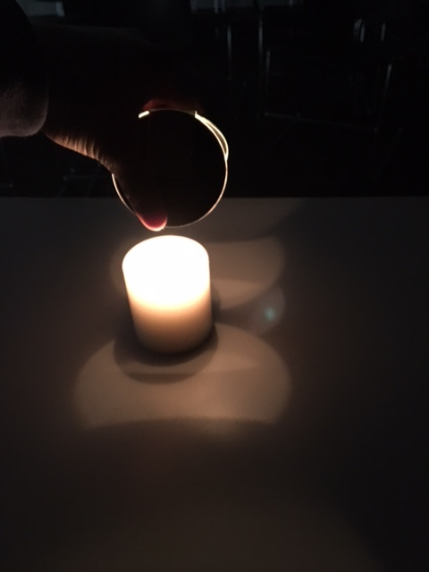 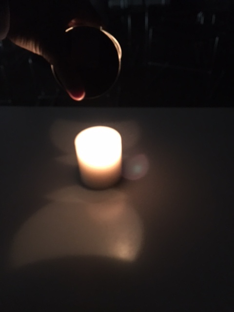 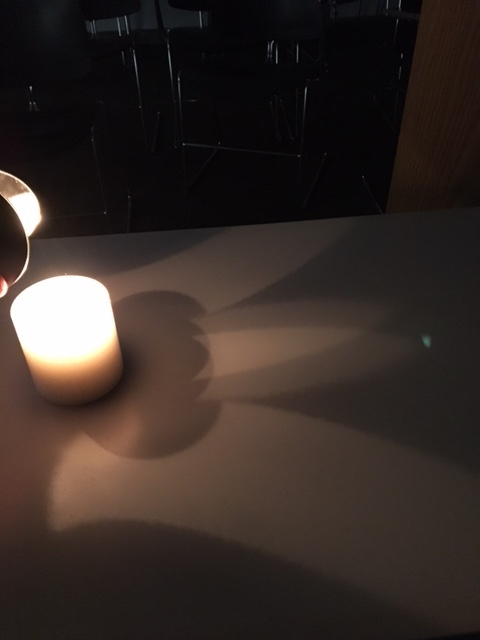 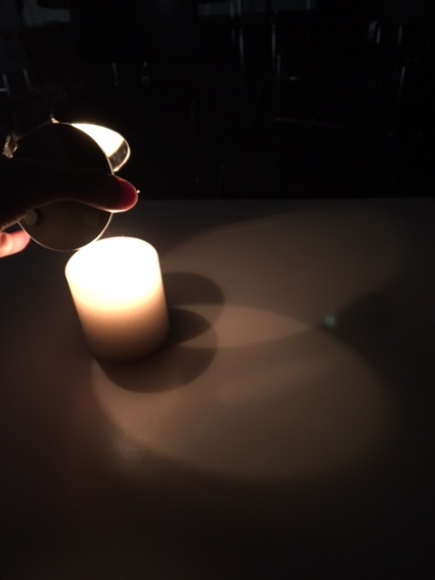 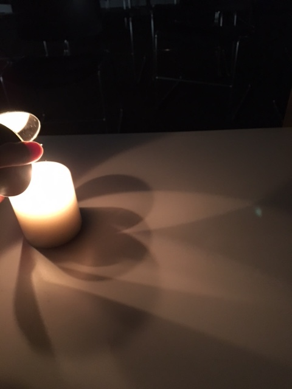 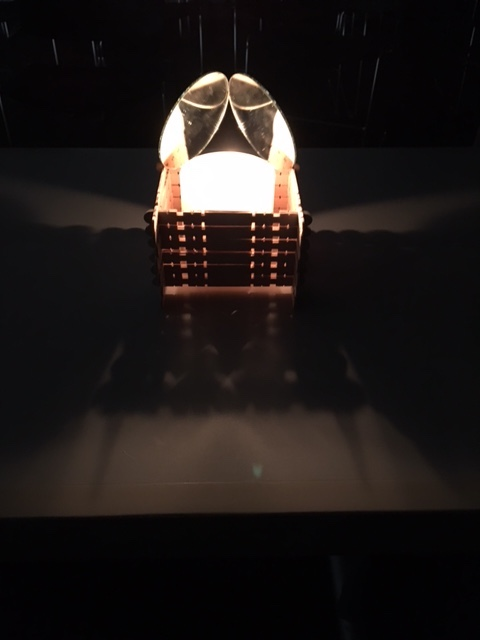 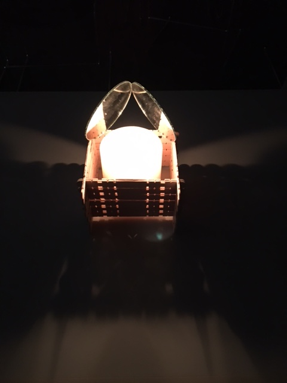 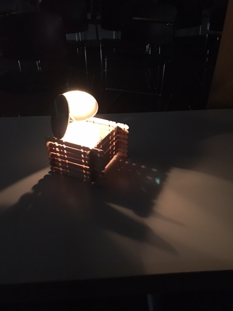 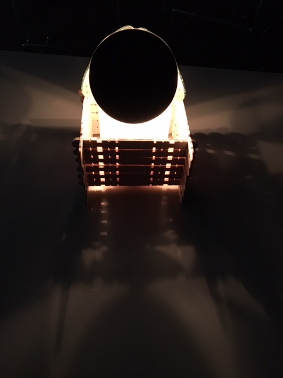 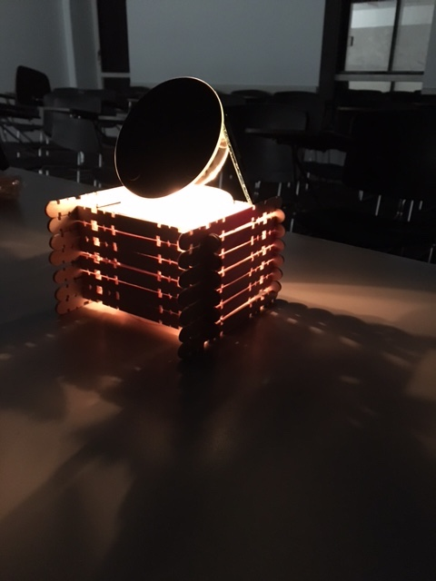 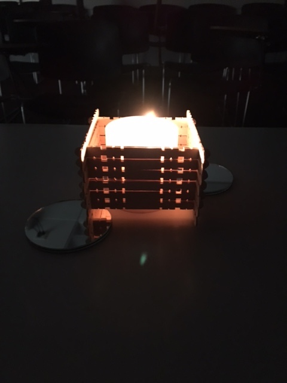The next step was to create a story/narrative for the product. This is perhaps one of the hardest things to do for this product in particular -- it's window dressing, nothing more. Either, you like the aesthetic and see the appeal, or you don't, in which case, you don't buy it. Sure, it's possible to fabricated some narrative about the healthful effects of natural light, but that is, fundamentally, a fabrication... Well, time to sell my soul regardless...
Story one: Natural light, optimized for aesthetic appeal.
Story two: The centrepiece of your next dinner party.
Story three: Bring your light back to life. (candlelight is 'alive', not dead like LEDs)
Story four: Light in motion (candlelight flickers, unlike LEDs).
Elevator pitch: Light has become an afterthought -- the constant luminance provided by LEDs is motionless, soulless, and it commands no attention. In a word, it's dead. This is particularly troublesome, considering the volume of research that supports the positive correlation between natural light and mood. My design gives life back to the humble candle, magnifying the natural flickering, and using it to the fullest by creating refraction patterns that dance to the rhythm of the flame. This is all tied into a minimal aesthetic, that functions as a centrepiece at a dinner party, a particularly chic desk accessory, or a nightlight, and hearkens back to a simpler time.